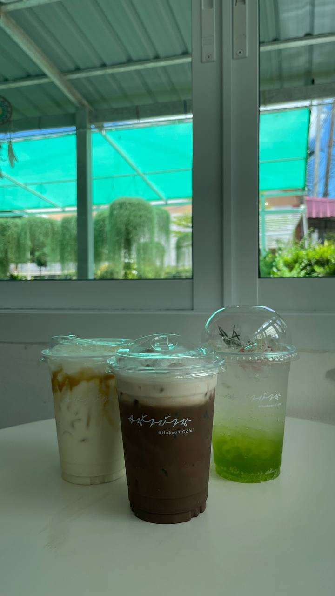

Home
About me
My Education
My Experience
My Passion
Contact Me
COOKING
I have been trained by the business owned by my dad, a restaurant business owner, since I was a teenager.
I was brought into the restaurant at the age of 14 to do business tasks including taking restaurant inventory, cooking,
preparing beverages, serving customers, and more. After that, I ended up myself in a kitchen dilemma.
COFFEE HUNTING
I love researching the coffee industry, finding new experiences and sharing those
encounters with my friends on social media. Coffee shops need to adapt and cater to the different
interests and values of this generation as they continue to influence consumer trends.
